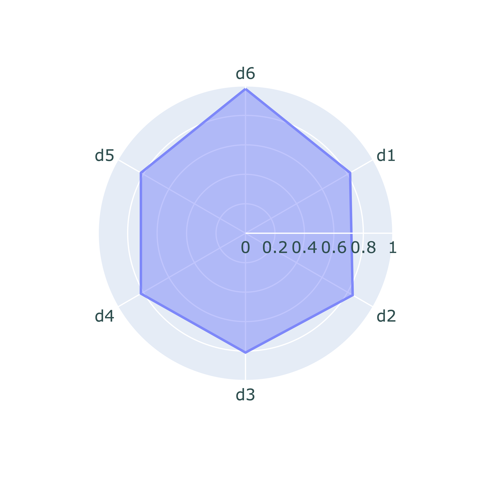
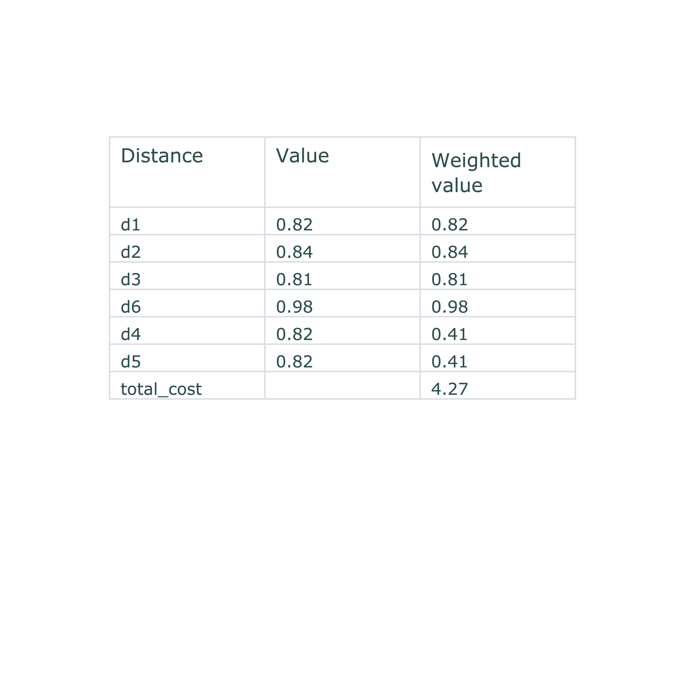
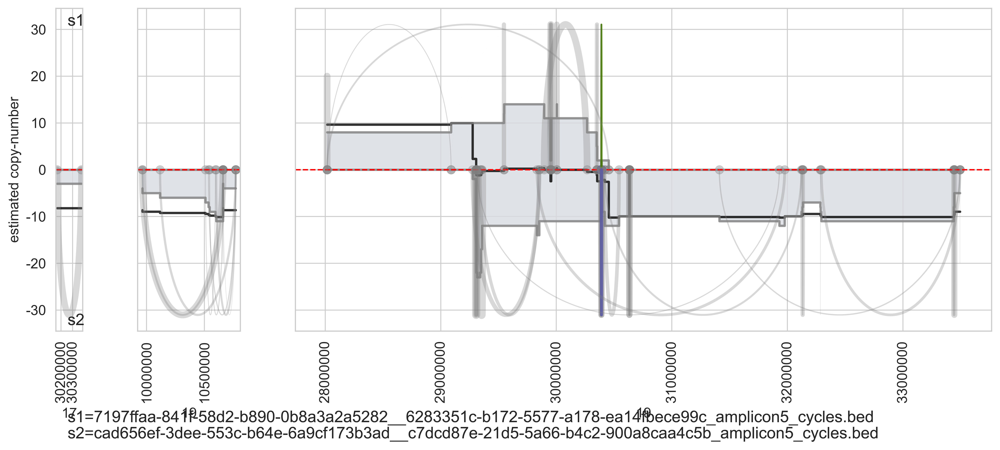

Date: 2026-04-20 00:32:29.359827
Sample s1: /Volumes/henssen_lab/data/AmpliconRepository/PCAWG_filtered_bed/results/AA_outputs/DO43658-SP95222/7197ffaa-841f-58d2-b890-0b8a3a2a5282__6283351c-b172-5577-a178-ea14fbece99c_classification/files/7197ffaa-841f-58d2-b890-0b8a3a2a5282__6283351c-b172-5577-a178-ea14fbece99c_amplicon5_cycles.bed
Sample s2: /Volumes/henssen_lab/data/AmpliconRepository/PCAWG_filtered_bed/results/AA_outputs/DO43859-SP95646/cad656ef-3dee-553c-b64e-6a9cf173b3ad__c7dcd87e-21d5-5a66-b4c2-900a8caa4c5b_classification/files/cad656ef-3dee-553c-b64e-6a9cf173b3ad__c7dcd87e-21d5-5a66-b4c2-900a8caa4c5b_amplicon5_cycles.bed
Output directory: examples/output_DO43658_DO43859_uterus_uterus
Here we compute the cycle distance between `s1` and `s2`.
Distance description:
d1 = Hamming distance = measures differences of genomic regions presence / absence for s1 and s2
d2 = Cosind distance = measures the copy-number distance between the s1 and s2 using cosine distance
d3 = Min-max distance = measures the copy-number distance between the s1 and s2 using jaccard distance
d4 = Bins distance = measures differences of genomic bins usage
d5 = Paths distance = measures differences of paths decomposition between s1 and s2
d6 = Breakpoint distance = measures differences between the breakpoint junctions profiles between s1 and s2
The radial plot shows all these distances, with values between 0 (low cost, high similarity) and 1 (high
cost, low similarity).
The more colorful the more distant are `s1` and `s2`.


Coverage (gray track) and breakpoint-pairs matches for s1 (green) and s2 (blue).
Unmached
breakpoint-pairs are displayed in gray. The log2(s1/s2) is displayed in black. The zero reference is
displayed as dotted red line.
